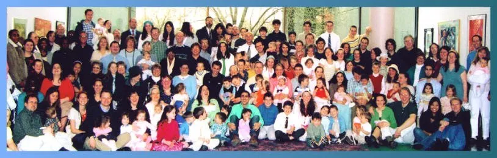

A journey of faith, community, and God's grace in Ypsilanti and beyond.

Began ministry on Easter Sunday in Michigan.
Rooted in weekly small groups called Hope Groups.
Outreach from local neighborhoods to villages in Asia.
Hope Community Church began when three Christian families recognized a need for reaching a new generation for Jesus Christ in the Ann Arbor and Detroit areas. One of those families, the Manwillers, moved from Alaska to Michigan in 1992 to help establish the new church. After a season of planning and prayer, Hope Church began its ministry on Easter Sunday, 1993.
In the early years of our church, we saw many young people come to Christ. Some were university students. Others were high school students. Still others were young adults who came out of very needy or broken backgrounds. It was wonderful to watch God change the hearts of these young people and knit them together into a Christ-centered church.
In 1995 we started ten years of outreach in the city of Detroit. That gave us the experience and courage to reach people in more distant settings, from a Native community in Canada to formerly unreached villages in Asia. But we have not neglected the people where we live. All church members are encouraged to develop their own areas of local ministry and evangelism.
From the start of the church, we have placed a special value on our home-based discipleship groups, which we call Hope Groups. These groups meet every week for worship, Bible teaching, prayer and pastoral care. The people in each Hope Group support and encourage one another throughout the week. The groups meet in many communities, reflecting the church's widening circle of influence. Church members meet with a Hope Group in their own area, then on Sunday drive to Ypsilanti to meet with the entire church body.
Those who were young children when the church began are now adults, serving in positions of responsibility. Those who once were young parents are now becoming grandparents. And still our church continues to see many people, especially young people, coming to Christ. We have seen God do many beautiful things, and we look forward to God's guidance for the future.